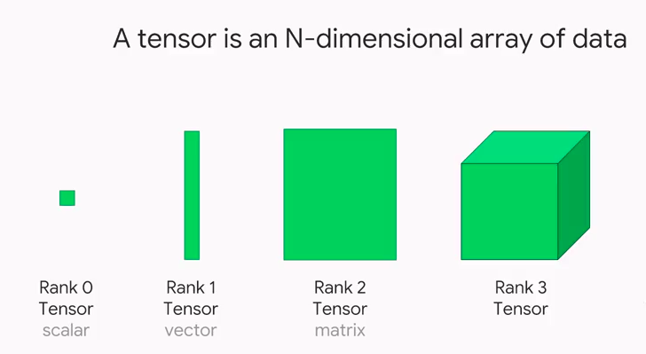

Lecture 3 - PyTorch Tensor Objects Attributes and Methods#
This will cover the following operations of a tensor object:
Converting NumPy arrays to PyTorch tensors
Creating tensors from scratch
Indexing and slicing
Reshaping tensors (tensor views)
Tensor arithmetic and basic operations
Dot products
Matrix multiplication
Additional, more advanced operations

In PyTorch, we use tensors to encode the inputs and outputs of a model, as well as the model’s parameters. Tensors are similar to NumPy’s ndarrays, except that tensors can run on GPUs or other specialized hardware to accelerate computing.
1. Converting NumPy arrays to PyTorch tensors#
A torch.Tensor is a multi-dimensional matrix containing elements of a single data type. Calculations between tensors can only happen if the tensors share the same dtype. In some cases tensors are used as a replacement for NumPy to use the power of GPUs (more on this later). Let’s try to initialize a NumPy array first!
import torch
import numpy as np
import sys
arr = np.array([1,2,3,4,5]).astype('float64')
print(arr)
print(arr.dtype)
print(type(arr))
[1. 2. 3. 4. 5.]
float64
<class 'numpy.ndarray'>
x = torch.from_numpy(arr)
# Equivalent to x = torch.as_tensor(arr)
print(x)
tensor([1., 2., 3., 4., 5.], dtype=torch.float64)
# Print the datatype
print(x.dtype)
torch.float64
# Print the tensor object type
print(type(x))
print(x.type()) # this is more specific!
<class 'torch.Tensor'>
torch.DoubleTensor
arr2 = np.arange(0.,12.).reshape(4,3)
print(arr2)
print(type(arr2))
[[ 0. 1. 2.]
[ 3. 4. 5.]
[ 6. 7. 8.]
[ 9. 10. 11.]]
<class 'numpy.ndarray'>
x2 = torch.from_numpy(arr2)
print(x2)
print(x2.type())
tensor([[ 0., 1., 2.],
[ 3., 4., 5.],
[ 6., 7., 8.],
[ 9., 10., 11.]], dtype=torch.float64)
torch.DoubleTensor
rows, cols = 5, 5
# Create matrix using array comprehension
mat = np.matrix([[np.round(np.random.random(), 3) for _ in range(cols)] for _ in range(rows)])
print(mat)
print(type(mat))
xmat = torch.from_numpy(mat)
print(xmat)
print(type(xmat))
[[0.776 0.425 0.989 0.077 0.471]
[0.95 0.395 0.317 0.987 0.664]
[0.836 0.09 0.711 0.461 0.173]
[0.317 0.067 0.42 0.81 0.336]
[0.164 0.467 0.69 0.89 0.607]]
<class 'numpy.matrix'>
tensor([[0.7760, 0.4250, 0.9890, 0.0770, 0.4710],
[0.9500, 0.3950, 0.3170, 0.9870, 0.6640],
[0.8360, 0.0900, 0.7110, 0.4610, 0.1730],
[0.3170, 0.0670, 0.4200, 0.8100, 0.3360],
[0.1640, 0.4670, 0.6900, 0.8900, 0.6070]], dtype=torch.float64)
<class 'torch.Tensor'>
# Check if an object is a tensor
torch.is_tensor(mat)
False

xmat.type()
'torch.DoubleTensor'
z = torch.from_numpy(np.array(np.random.random()).astype('int64'))
print(z)
z.type()
tensor(0)
'torch.LongTensor'
torch.from_numpy()torch.as_tensor()torch.tensor()
There are a number of different functions available for creating tensors. When using torch.from_numpy() and torch.as_tensor(), the PyTorch tensor and the source NumPy array share the same memory. This means that changes to one affect the other. However, the torch.tensor() function always makes a copy.
# Using torch.from_numpy()
arr = np.arange(0,5)
t = torch.from_numpy(arr)
print(t)
tensor([0, 1, 2, 3, 4], dtype=torch.int32)
arr[2] = 77
print(t)
tensor([ 0, 1, 77, 3, 4], dtype=torch.int32)
# Using torch.tensor()
arr = np.arange(0,5)
t = torch.tensor(arr)
print(t)
tensor([0, 1, 2, 3, 4], dtype=torch.int32)
arr[2] = 77
print(t)
tensor([0, 1, 2, 3, 4], dtype=torch.int32)
2. Creating tensors from scratch#
Uninitialized tensors with .empty()#
torch.empty() returns an uninitialized tensor. Essentially a block of memory is allocated according to the size of the tensor, and any values already sitting in the block are returned. This is similar to the behavior of numpy.empty().
x = torch.empty(4, 3)
print(x)
tensor([[0., 0., 0.],
[0., 0., 0.],
[0., 0., 0.],
[0., 0., 0.]])
Initialized tensors with .zeros() and .ones()#
torch.zeros(size)torch.ones(size)
It’s a good idea to pass in the intended dtype.
x = torch.zeros(4, 3, dtype=torch.int64)
print(x)
tensor([[0, 0, 0],
[0, 0, 0],
[0, 0, 0],
[0, 0, 0]])
x = torch.ones(4, 4)
print(x)
tensor([[1., 1., 1., 1.],
[1., 1., 1., 1.],
[1., 1., 1., 1.],
[1., 1., 1., 1.]])
Tensors from ranges#
torch.arange(start, end, step)torch.linspace(start, end, steps)
Note: With .arange(), end is exclusive, while with linspace(), end is inclusive.
x = torch.arange(0,18,2).reshape(3,3)
print(x)
tensor([[ 0, 2, 4],
[ 6, 8, 10],
[12, 14, 16]])
x = torch.linspace(0,18,12).reshape(3,4)
print(x)
tensor([[ 0.0000, 1.6364, 3.2727, 4.9091],
[ 6.5455, 8.1818, 9.8182, 11.4545],
[13.0909, 14.7273, 16.3636, 18.0000]])
Tensors from data
torch.tensor() will choose the dtype based on incoming data:
x = torch.tensor([1, 2, 3, 4])
print(x)
print(x.dtype)
print(x.type())
#changing datatypes
x.type(torch.int32)
tensor([1, 2, 3, 4])
torch.int64
torch.LongTensor
tensor([1, 2, 3, 4], dtype=torch.int32)
You can also pass the dtype in as an argument. For a list of dtypes visit https://pytorch.org/docs/stable/tensor_attributes.html#torch.torch.dtype
x = torch.tensor([8,9,-3], dtype=torch.int)
print(x)
print(x.dtype)
print(x.type())
tensor([ 8, 9, -3], dtype=torch.int32)
torch.int32
torch.IntTensor
Changing the dtype of existing tensors
Don’t be tempted to use x = torch.tensor(x, dtype=torch.type) as it will raise an error about improper use of tensor cloning. Instead, use the tensor .type() method.
print('Old:', x.type())
x = x.type(torch.int64)
print('New:', x.type())
Old: torch.IntTensor
New: torch.LongTensor
Random number tensor
torch.rand(size) returns random samples from a uniform distribution over [0, 1)
torch.randn(size) returns samples from the “standard normal” distribution [σ = 1]
Unlike rand which is uniform, values closer to zero are more likely to appear.
torch.randint(low,high,size) returns random integers from low (inclusive) to high (exclusive)
x = torch.rand(4, 3)
print(x)
tensor([[0.1871, 0.3801, 0.6479],
[0.9129, 0.2599, 0.1558],
[0.4040, 0.8006, 0.1917],
[0.7850, 0.9114, 0.9131]])
x = torch.randn(4, 3)
print(x)
tensor([[ 0.9591, -1.1598, 0.4209],
[ 1.2222, -0.2730, -0.9472],
[-0.4980, -0.0789, 0.7753],
[ 2.1318, -0.3183, 0.4144]])
Random number tensors that follow the input size
torch.rand_like(input)
torch.randn_like(input)
torch.randint_like(input,low,high)
these return random number tensors with the same size as input
x = torch.zeros(2,5)
print(x)
tensor([[0., 0., 0., 0., 0.],
[0., 0., 0., 0., 0.]])
x2 = torch.randn_like(x)
print(x2)
tensor([[ 0.0932, -0.6070, -0.7986, 0.3791, -0.0267],
[-0.2754, -1.3480, 0.1265, 1.9162, 0.7564]])
The same syntax can be used with
torch.zeros_like(input)
torch.ones_like(input)
x3 = torch.ones_like(x2)
print(x3)
tensor([[1., 1., 1., 1., 1.],
[1., 1., 1., 1., 1.]])
x4 = torch.zeros_like(x3)
print(x4)
tensor([[0., 0., 0., 0., 0.],
[0., 0., 0., 0., 0.]])
Setting the random seed
torch.manual_seed(int) is used to obtain reproducible results
torch.manual_seed(42)
x = torch.rand(2, 3)
print(x)
tensor([[0.8823, 0.9150, 0.3829],
[0.9593, 0.3904, 0.6009]])
torch.manual_seed(42)
x = torch.rand(2, 3)
print(x)
tensor([[0.8823, 0.9150, 0.3829],
[0.9593, 0.3904, 0.6009]])
Tensor attributes
Besides dtype, we can look at other tensor attributes like shape, device and layout.
x.shape
torch.Size([2, 3])
x.size() # equivalent to x.shape
torch.Size([2, 3])
x.device
device(type='cpu')
PyTorch supports use of multiple devices, harnessing the power of one or more GPUs in addition to the CPU. We won’t explore that here, but you should know that operations between tensors can only happen for tensors installed on the same device.
x.layout
torch.strided
PyTorch has a class to hold the memory layout option. The default setting of strided will suit our purposes throughout the course.
3. Indexing and Slicing#
Extracting specific values from a tensor works just the same as with NumPy arrays.
x = torch.arange(6).reshape(3,2)
print(x)
tensor([[0, 1],
[2, 3],
[4, 5]])
# Grabbing the right hand column values
x[:,1]
tensor([1, 3, 5])
# Grabbing the right hand column as a (3,1) slice
x[:,1:]
tensor([[1],
[3],
[5]])
4. Reshape tensors with .view()#
view() and reshape() do essentially the same thing by returning a reshaped tensor without changing the original tensor in place.
There’s a good discussion of the differences here.
x = torch.arange(10)
print(x)
tensor([0, 1, 2, 3, 4, 5, 6, 7, 8, 9])
y = x.view(2,5)
y[0, 0] = 5
y
tensor([[5, 1, 2, 3, 4],
[5, 6, 7, 8, 9]])
# x is changed by changing y, which shares the data...
x
tensor([5, 1, 2, 3, 4, 5, 6, 7, 8, 9])
a = x.reshape(5,2)
a[0, 0] = 99
x
tensor([99, 1, 2, 3, 4, 5, 6, 7, 8, 9])
Adopt another tensor’s shape with .view_as()
view_as(input) only works with tensors that have the same number of elements.
z = torch.ones((5, 2))
x.view_as(z)
tensor([[99, 1],
[ 2, 3],
[ 4, 5],
[ 6, 7],
[ 8, 9]])
z
tensor([[1., 1.],
[1., 1.],
[1., 1.],
[1., 1.],
[1., 1.]])
5. Tensor Arithmetic#
Adding tensors can be performed a few different ways depending on the desired result. As a simple expression:
a = torch.tensor([1,2,3], dtype=torch.float)
b = torch.tensor([4,5,6], dtype=torch.float)
print(a + b)
tensor([5., 7., 9.])
As arguments passed into a torch operation:
print(torch.add(a, b))
tensor([5., 7., 9.])
With an output tensor passed in as an argument:
result = torch.empty(3)
torch.add(a, b, out=result) # equivalent to result=torch.add(a,b)
print(result)
tensor([5., 7., 9.])
a.add_(b) # equivalent to a=torch.add(a,b)
print(a)
tensor([5., 7., 9.])
NOTE: Any operation that changes a tensor in-place is post-fixed with an underscore .
In the above example: a.add(b) changed a.
Basic Tensor Operations#
ARITHMETIC#
Operation |
Function |
Description |
|---|---|---|
|
|
element wise addition |
|
|
subtraction |
|
|
multiplication |
|
|
division |
|
|
modulo (remainder after division) |
|
|
power |
MONOMIAL OPERATIONS#
Operation |
Function |
Description |
|---|---|---|
|
|
absolute value |
|
|
reciprocal |
|
|
square root |
|
|
natural log |
|
|
exponential |
|
|
truncated integer |
|
|
fractional component |
SUMMARY STATISTICS#
Operation |
Function |
Description |
|---|---|---|
|
|
sum |
|
|
mean |
|
|
maximum |
|
|
minimum |
torch.max(a,b) returns a tensor of size a containing the element wise max between a and b.
NOTE: Most arithmetic operations require float values. Those that do work with integers return integer tensors. For example, torch.div(a,b) performs floor division (truncates the decimal) for integer types, and classic division for floats.
6. Dot Products#
A dot product is the sum of the products of the corresponding entries of two 1D tensors. If the tensors are both vectors, the dot product is given as:
If the tensors include a column vector, then the dot product is the sum of the result of the multiplied matrices. For example:
Dot products can be expressed as torch.dot(a,b) or a.dot(b) or b.dot(a).
a = torch.tensor([1,2,3], dtype=torch.float)
b = torch.tensor([4,5,6], dtype=torch.float)
print(a.dot(b))
tensor(32.)
NOTE: There’s a slight difference between torch.dot() and numpy.dot(). While torch.dot() only accepts 1D arguments and returns a dot product, numpy.dot() also accepts 2D arguments and performs matrix multiplication. We show matrix multiplication below.
7. Matrix Multiplication#
2D Matrix multiplication is possible when the number of columns in tensor A matches the number of rows in tensor B. In this case, the product of tensor A with size \((x, y)\) and tensor B with size \((y, z)\) results in a tensor of size \((x, z)\).
Matrix multiplication can be computed using:
torch.mm(a, b)a.mm(b)a @ b
a = torch.tensor([[0,2,4],[1,3,5]], dtype=torch.float)
b = torch.tensor([[6,7],[8,9],[10,11]], dtype=torch.float)
print('a: ',a.size())
print('b: ',b.size())
print('a x b: ',torch.mm(a,b).size())
a: torch.Size([2, 3])
b: torch.Size([3, 2])
a x b: torch.Size([2, 2])
print(torch.mm(a,b))
tensor([[56., 62.],
[80., 89.]])
print(a.mm(b))
tensor([[56., 62.],
[80., 89.]])
print(a @ b)
tensor([[56., 62.],
[80., 89.]])
Matrix multiplication with broadcasting
Matrix multiplication that involves broadcasting can be computed using torch.matmul(a,b) or a.matmul(b) or a @ b
t1 = torch.randn(2, 3, 4)
t2 = torch.randn(4, 5)
print(torch.matmul(t1, t2).size())
torch.Size([2, 3, 5])
However, the same operation raises a RuntimeError with torch.mm():
# print(torch.mm(t1, t2).size())
t1 = torch.randn(2, 3)
t1
tensor([[ 0.7596, 0.7343, -0.6708],
[ 2.7421, 0.5568, -0.8123]])
t2 = torch.randn(3).reshape(3,1)
t2
tensor([[ 1.1964],
[ 0.8613],
[-1.3682]])
print(torch.mm(t1, t2))
tensor([[2.4590],
[4.8718]])
8. Additional Operations#
L2 or Euclidean Norm#
See torch.norm()
The Euclidean Norm gives the vector norm of \(x\) where \(x = (x_1, x_2, ..., x_n)\).
It is calculated as:
When applied to a matrix, torch.norm() returns the Frobenius norm by default.
x = torch.tensor([2.,5.,8.,14.])
x.norm()
tensor(17.)
Number of Elements
See torch.numel()
Returns the number of elements in a tensor.
x = torch.ones(3,7)
x.numel()
21